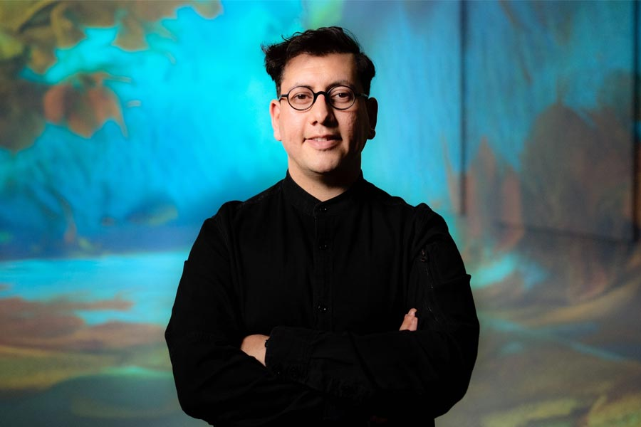

Refik Anadol es un artista y diseñador pionero en el campo del arte basado en datos y la inteligencia artificial. Su trabajo se sitúa en la intersección entre arte, ciencia y tecnología, explorando cómo los sistemas computacionales pueden convertirse en herramientas creativas capaces de producir experiencias inmersivas. A través de instalaciones a gran escala, transforma información abstracta en formas visuales dinámicas.
Su enfoque se centra en la idea de que los datos no son solo información funcional, sino también un material artístico con potencial expresivo. Utiliza algoritmos de aprendizaje automático para procesar grandes volúmenes de datos y convertirlos en imágenes en constante transformación. Estas obras invitan a repensar la relación entre humanos y máquinas.
Las experiencias que crea suelen involucrar arquitectura, luz y sonido, generando entornos que estimulan los sentidos y producen una percepción expandida del espacio. En este sentido, su trabajo redefine los límites tradicionales del arte visual y lo acerca a lo experiencial.

“Los datos pueden ser un material artístico, tan expresivo como el pigmento o el sonido.”
Nacido en Turquía y radicado en Los Ángeles, Refik Anadol ha desarrollado una carrera internacional con exposiciones en museos, galerías y espacios públicos de todo el mundo. Su formación en diseño y medios digitales le permitió consolidar una práctica interdisciplinaria que integra arte, programación y ciencia de datos.
A lo largo de su trayectoria, ha colaborado con instituciones culturales, empresas tecnológicas y centros de investigación. Estas colaboraciones le han permitido acceder a grandes conjuntos de datos y desarrollar proyectos innovadores que combinan creatividad y tecnología avanzada.
Su obra ha sido exhibida en espacios emblemáticos y ha recibido reconocimiento por su capacidad para traducir conceptos complejos en experiencias accesibles. Su trabajo se posiciona como una referencia clave dentro del arte contemporáneo vinculado a la inteligencia artificial.